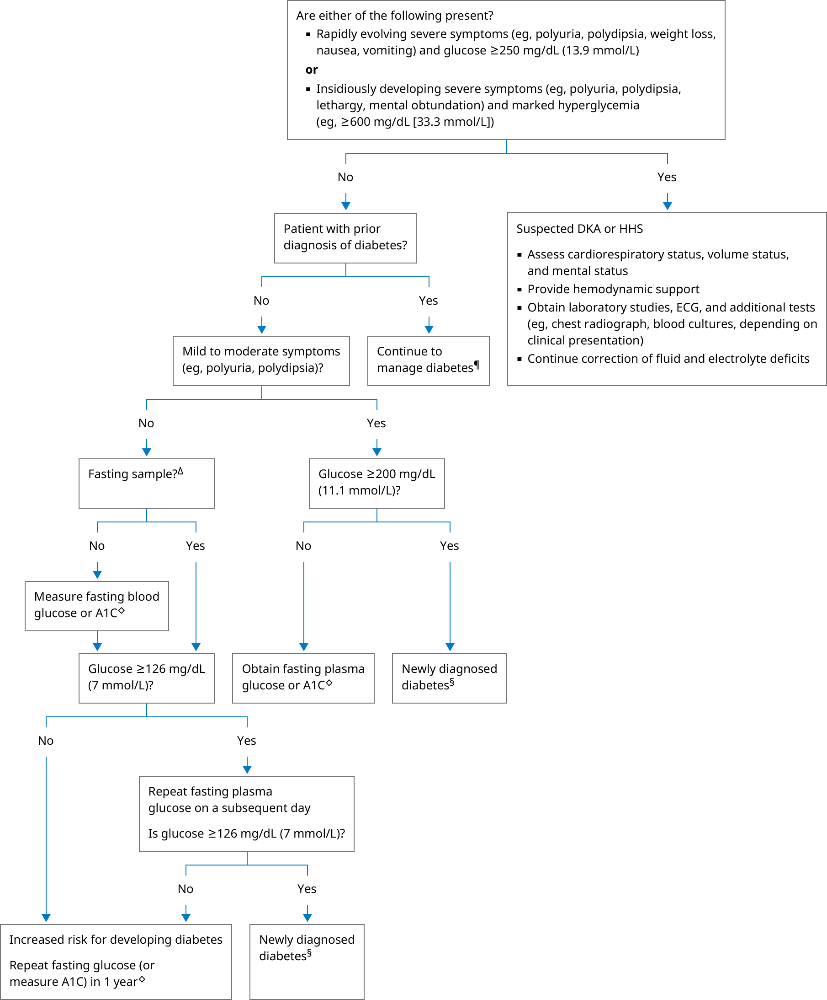

A1C: glycated hemoglobin (or hemoglobin A1C); DKA: diabetic ketoacidosis; ECG: electrocardiogram; HHS: hyperosmolar hyperglycemic state; OGTT: oral glucose tolerance test.
* The normal reference range for fasting glucose is approximately 70 to 99 mg/dL (3.9 to 5.5 mmol/L). Interpretation of a specific abnormal test result should be based on the reference range reported with that result.
¶ In patients with diabetes, glycemic management is typically monitored with A1C (rather than plasma glucose) along with either with intermittent capillary blood sampling and the use of a glucose meter or with devices designed for continuous glucose monitoring.
Δ Fasting is defined as no caloric intake for at least 8 hours.
◊ If screening for diabetes and obtaining a fasting specimen is inconvenient, A1C can be measured instead. Simultaneously ordering a fasting glucose and A1C is a reasonable option, particularly in patients with the highest risk of diabetes (eg, multiple risk factors for abnormal glucose metabolism).
§ Diagnostic criteria for diabetes: fasting glucose ≥126 mg/dL (7 mmol/L), A1C ≥6.5% (48 mmol/mol), 2-hour glucose in an OGTT ≥200 mg/dL (11.1 mmol/L), or a random glucose ≥200 mg/dL in the presence of symptoms. Criteria 1 through 3 should be confirmed by repeat testing.